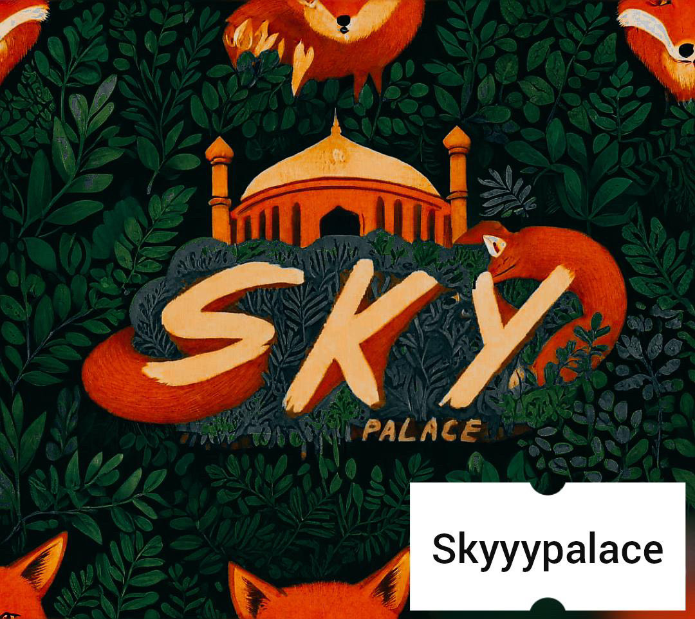

Titre : Sky palace Auteur : Lowen Lino Date : 2024 Contexte : Sky palace est un groupe de 6 musiciens du lycée, guitare, bass, batterie, piano, trombone et enfin chant. Le groupe s'est formé en ce début d'année scolaire 2024/2025 et joue de la soul, du funk, de la bossa etc... Où suivre sky palace ? Sur instagram : Skyyypalace
Retrouvez nous sur la scène en suivant notre compte
Histoire inventée
Dans un lycée animé par la passion de la musique, six âmes créatives se sont rencontrées par hasard dans la salle de musique. Un guitariste rêveur, un bassiste au groove contagieux, un batteur énergique, un pianiste aux doigts de fée, un tromboniste passionné et une voix envoûtante. Ensemble, ils ont donné naissance à Sky Palace, un groupe qui mélange les genres avec audace. Comme le renard qui suivait le semeur pour protéger les graines sacrées, ces six musiciens veillent sur leurs compositions, semant jour après jour des notes de soul, de funk et de bossa dans les cœurs de leur public. Leur musique, tel un jardin en pleine croissance, fleurit et s'épanouit, créant une harmonie unique qui résonne dans les couloirs du lycée et au-delà. Suivez leur aventure musicale sur Instagram @Skyyypalace, où chaque publication raconte un nouveau chapitre de leur histoire